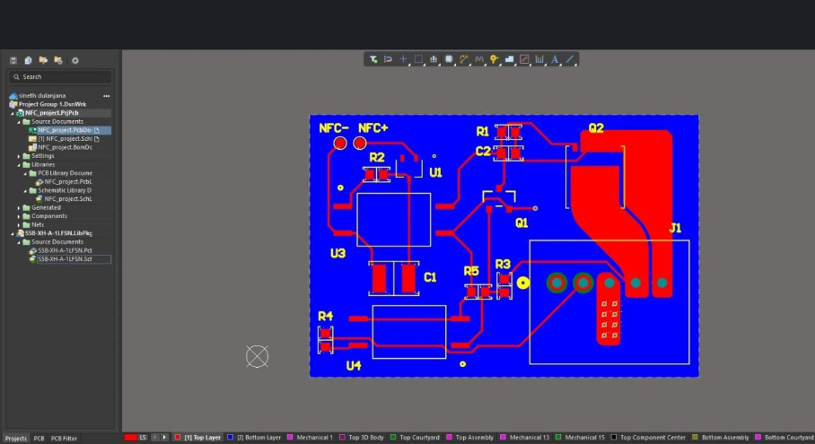
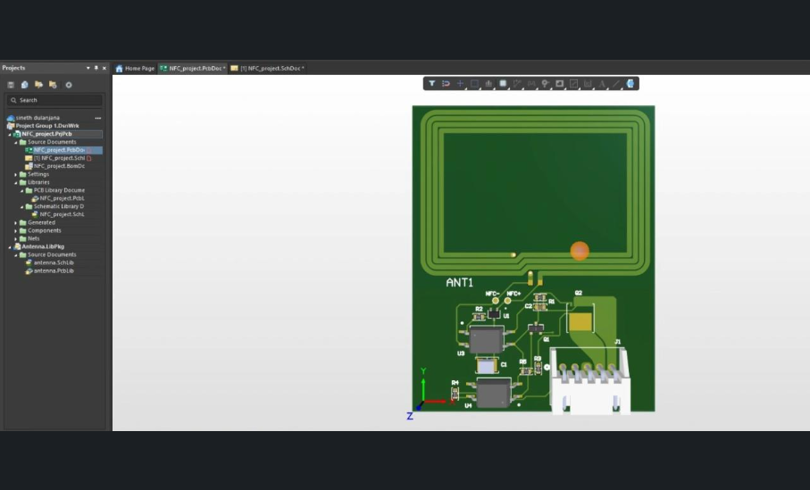

NFC Power-Triggering PCB
A PCB that uses Near Field Communication to contactlessly switch on electronic systems, designed in Altium Designer.


Project Overview
A Near Field Communication (NFC) based power-triggering PCB that enables contactless activation of electronic systems. The project integrates RF design, power electronics and embedded hardware into a compact, production-ready board built with Altium Designer.
The board detects an external NFC field, for example from a smartphone or reader, through a multi-turn antenna (ANT1). An NFC front-end IC converts the induced signal into a trigger that drives a MOSFET power-switching stage (Q2), giving wireless control of the power rail. Developed with Sahan Ayashmantha at C3 Labs.
Technologies Used
Key Components & Features
Antenna Design (ANT1)
Custom rectangular PCB loop optimised for 13.56 MHz resonance with a high Q-factor and controlled impedance.
Matching Network (C1, C2, R1, R2)
RF tuning network for efficient energy transfer and precise resonance.
NFC Front-End IC (U1)
Detects magnetic coupling and converts the induced RF voltage into a clean logic-level control signal.
Power Switch (Q2)
High-efficiency MOSFET providing stable power delivery and isolation from the NFC front end.
Control & Regulation (U3, U4, R3–R5)
Signal conditioning, logic control and protection functions.
Connector Interface (J1)
External connectivity for the load or power input.
Key Learnings & Development
- Complete schematic capture and a 2-layer PCB layout in Altium Designer
- RF trace routing, component placement and ground management for minimal noise and maximum coupling
- Design for manufacturing, thermal management and test accessibility